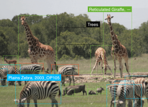
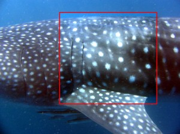

wildlife + citizen science + computer vision + A.I.
|
At Wild Me, high technology and citizen science are telling the amazing stories of animals' lives.
Wildlife research in the 21st century will be an amazing blend of drones with advanced computer vision, massive data collection by citizen scientists, and the integration of artificial intelligence to help make sense of it all. We are starting to have unprecedented insight into the complex and rich lives of the wildlife we study. Through advanced computing, we're bringing their stories to you.
It starts with good science. Click on a project below to learn more about our work on wildlife + citizen science + artificial intelligence.
{kind=link}
The Image Based Ecological Information System (IBEIS) platform brings a wealth of new data to science and conservation. By combining the power of big data analytics to assess wildlife health and habitat with the capability for tracking individual animals, IBEIS makes it possible to connect ecological dots in ways never before possible.
{kind=link}
{kind=link}
Wildbook™ is a software framework to support mark-recapture, molecular ecology, and social ecology studies. Wildbook sits at the core of all of our projects, providing a reproducible intersection point between wildlife research, citizen science, and advanced computing (computer vision + artificial intelligence). Learn more >
{kind=link}
{kind=link}
{kind=link}
{kind=link}
{kind=link}
{kind=link}
Manta Matcher is the first global online manta ray database, managing manta ray sightings and identifications worldwide. Researchers and citizen scientists all collaborate through our Wildbook software.
“Manta Matcher will revolutionize global research on these threatened rays and help change the way field researchers approach scientific research on wild animals by means of successful and meaningful public involvement.” - Dr. Andrea Marshall, co-founder
Have you seen a whale shark?
The Wildbook for Whale Sharks photo-identification library is an award-winning visual database of whale shark (Rhincodon typus) encounters and of individually catalogued whale sharks. The library is maintained and used by marine biologists to collect and analyze whale shark sighting data to learn more about these amazing creatures.
The Wildbook uses photographs of the skin patterning behind the gills of each shark, and any scars, to distinguish between individual animals. Cutting-edge software supports rapid identification using pattern recognition and photo management tools.
{kind=link}